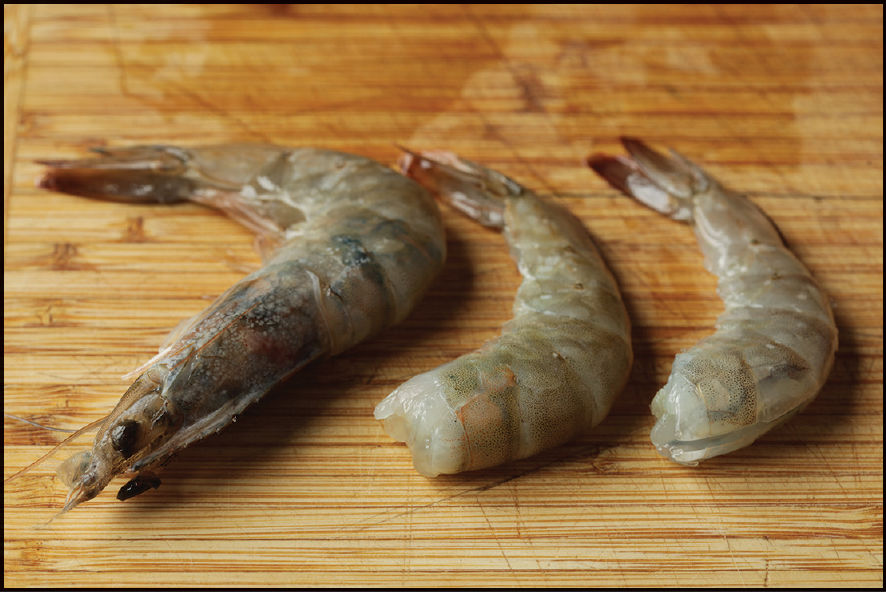
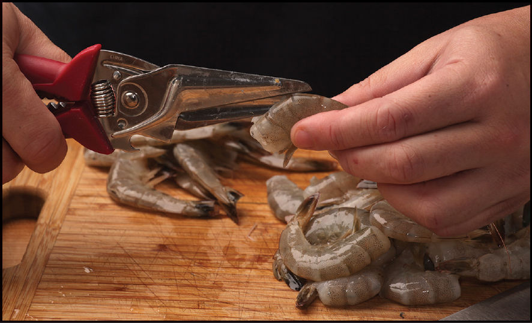
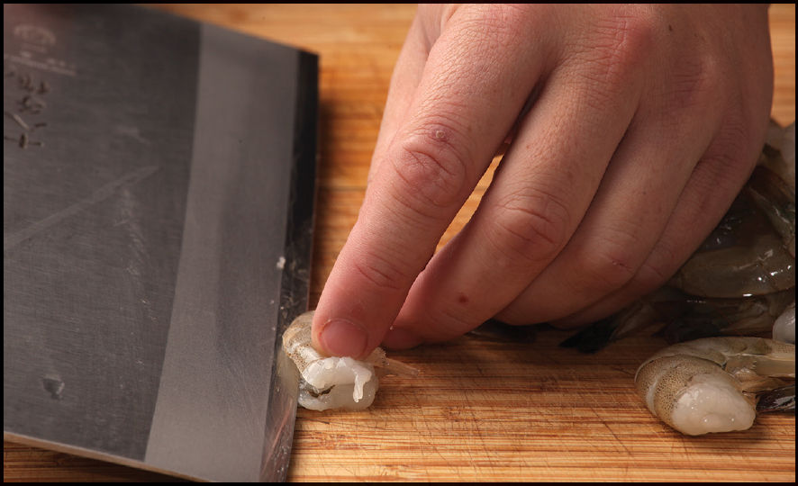
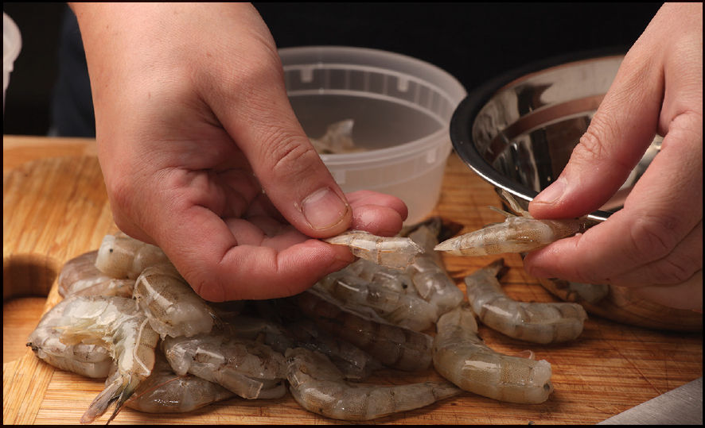
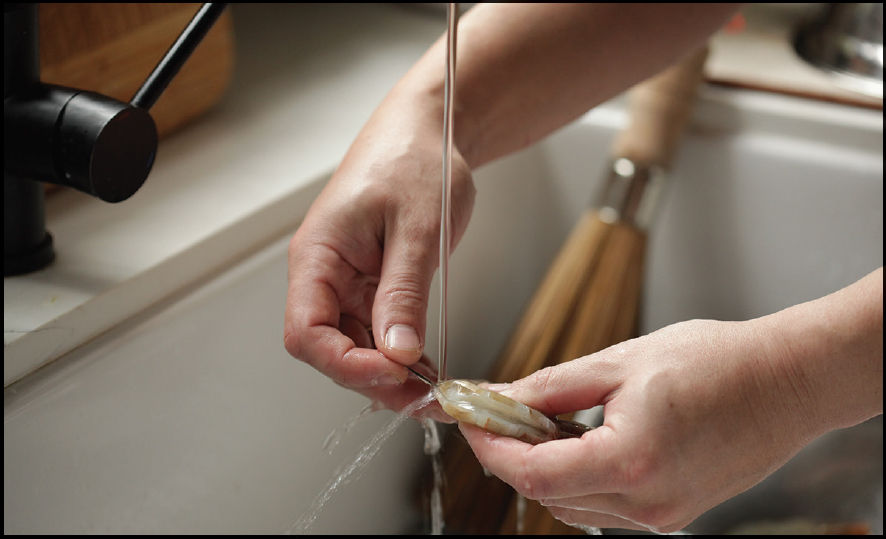
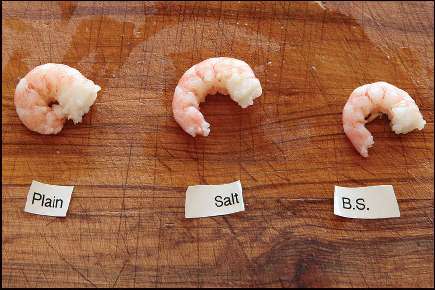

Stir-Fried Shrimp
Americans love their shrimp. We eat more shrimp than any other kind of seafood, and it is by far the most commonly ordered seafood at Chinese, Thai, and Vietnamese restaurants across the country. Shrimp are excellent for stir-fries. While most other proteins require some knifework to cut them to bite size, shrimp don’t, and if God didn’t intend for us to stir-fry shrimp, why would they come to us in perfectly chopstick-friendly portions?
HOW TO SHOP FOR SHRIMP

Even at a standard Western supermarket, there are a lot of options when it comes to shrimp—size, level of processing, species, etc. Here’s a quick guide to what to look for when shopping.
Q Is there ever a good time to buy precooked shrimp?

A Unless you’re already 15 minutes late to the potluck and you happened to win a quart of cocktail sauce in the office raffle, there’s no reason to buy precooked shrimp. Precooked shrimp should really be advertised as pre-overcooked shrimp.
Q I have access to a Chinese market where they sell live shrimp from tanks. Are those a good choice?
A Yes! Lucky you! Live shrimp have firmer flesh and a sweeter, fresher flavor than any kind of processed shrimp. If you can get shrimp from a live tank, or if you are lucky enough to live near a shrimp fishery where shrimp are delivered to the store alive and kicking, that should always be your first choice for cooking.
The easiest and most humane way to kill live shrimp is to lay them in a single layer on a rimmed baking sheet, refrigerate them for at least 15 minutes (the cold temperature of a refrigerator slows down their metabolism and brain activity to a crawl), then transfer the whole tray to the freezer for another 15 minutes. Thaw them at room temperature for about 5 minutes before proceeding with a recipe.
Q I can’t get live shrimp, but I can find head-on shrimp. That’s gotta be better than the headless kind, right?
A I avoid buying head-on shrimp unless they’re live. The reason for this is that shrimp and other crustaceans have an enzyme in their head that, shortly after the animal dies, will slowly work its way into the shrimp’s body, breaking down tissues and causing them to turn mushy. Even within a day or two the difference can be striking. (This is the same reason lobster is generally sold either alive or as already-separated tails and claws.)
Deheading the shrimp before freezing at the farm or at sea prevents this enzyme from spreading into the meat. As a result, headless shrimp are almost invariably plumper and firmer than head-on shrimp.
Q What about shell-on vs. shell-off?
A Completely shelled shrimp I find can sometimes be a little mangled—the people or machines that shell the shrimp are a little rougher on them than I like to be. Moreover, in many preparations, shrimp can and should be cooked in their shells, as that shell not only adds flavor to the meat underneath but also acts as a temperature buffer, protecting the shrimp from overcooking. In certain dishes, such as Cantonese Pepper and Salty Shrimp (here), I eat the shrimp shell and all.
A good choice is so-called EZ-peel shrimp, which come with the shell on but the back split open and the dark vein removed. With a bag of EZ-peels in the freezer, I can pull out as many as I need, place them in a bowl of brine (see Brined Shrimp for Stir-Fries, here), and they’re ready to go in just about 15 minutes.
Q I’ve seen shrimp that are frozen individually as well as shrimp that come in a big block of ice. Which is better?
A IQF stands for individually quick frozen, and the term means that each shrimp was frozen on its own and typically glazed in ice before being bagged. Block shrimp come frozen together in a large block of ice. As a general rule, the faster you freeze something, the smaller the loss in textural quality, so go with the IQF. They also have the advantage that they are much quicker to defrost.
Q What size shrimp should I buy?
A You’ll probably see terms like medium, large, and jumbo printed on bags of shrimp, but you should ignore those descriptors: those terms are unregulated, which means that they can change from producer to producer or supermarket to supermarket.
Instead, look for a set of two numbers, such as 26–30 or 16–20. These numbers indicate the number of individual shrimp that it takes to make up a pound. So in a package labeled 26–30, it will take between 26 and 30 shrimp to make up a pound, placing them on average at a little over half an ounce each. Thus, the smaller the number, the larger the shrimp. Once you get to around 15 shrimp or fewer per pound, you may seem them listed as U15 or U10, which means that it takes that many or fewer shrimp to make up a pound. U15 shrimp, for instance, would weigh a little over an ounce apiece.
For most of the recipes in this book, I use 26–40 count shrimp (usually marketed in the large to extra-large range), which thaw, brine, and cook fast in a stir-fry or when deep-fried.
Q Once I get the shrimp home, how should I store it?
A Frozen shrimp should be stored in the freezer until the day you are going to prepare them. Live shrimp or freshly killed head-on shrimp should be cooked as soon as possible. Thawed shrimp can be stored in the refrigerator. If you are planning on storing them for more than a day, I would suggest placing them on a plate or a rimmed baking sheet, wrapping them with plastic wrap, then putting a bag of ice cubes or an ice pack on top of the wrap to ensure that they stay chilled below fridge temps. Stored this way, thawed shrimp should stay fresh for about three days (change the ice every day).
HOW TO CLEAN SHRIMP
The most difficult step in cleaning shrimp is removing the digestive tract that runs down their back (often euphemistically referred to as the “vein”). If you plan on shelling or butterflying the shrimp, this is simple: just slit the back open with a sharp knife or some slender kitchen shears all the way down to the second-to-last segment.


To remove the shell of the shrimp, squeeze the shrimp from the second to last segment, pinching it upward so that the tail is pushed away from the meat inside the body. The back half of the shell should come right off.

Finally, peel the rest of the shell (including the legs) off the top portion of the shrimp and rinse out the vein under cool running water.

If serving shrimp with the head on and the shell intact, it’s a little bit trickier. I find that the best method is to bend the head of the shrimp forward and down until you can slip the tip of a wooden skewer between the back of the head and the first shell segment on the body. Use the skewer to carefully pull the start of the vein out, then gently pull it out with the skewer or tweezers. The goal is to pull out the whole vein in one go without damaging the shrimp shell. It can be frustrating. For several months at one of my jobs as a line cook, it was my task to do this daily to a few dozen shrimp, and even after months, my success rate was not at 100%.
You can, of course, just choose to leave the vein in place or to butterfly the shrimp (see here). It doesn’t really make a difference in flavor, and you don’t really notice it’s there unless you’re specifically looking for it (and if you have dinner guests who are specifically checking your deveining work, might I suggest finding new dinner guests, or perhaps not serving them shrimp anymore?).
BAKING SODA: THE SECRET TO PLUMPER, SNAPPIER SHRIMP
Have you ever bitten into a perfect, crystal-skinned har gow dumpling at a dim sum restaurant and marveled at how plump and almost crunchy the shrimp inside tastes? I have. In Chinese, the term is shuang cui, which translates roughly to “crisp-clear.” For a long time I thought it was simply a matter of perfectly cooking them. It wasn’t until I came across a post on the excellent website Rasa Malaysia that I discovered there was more to it than that. In that article, recipe writer Bee Yinn Low spoke with chefs from Hong Kong to California and along the way discovered that the key to extra-plump shrimp is to soak it in alkaline water.
I tested this by trying shrimp soaked in plain water (my tap comes out slightly alkaline at a pH of 7.5), shrimp soaked in salt water, shrimp soaked in baking-soda-spiked water (between pH 8 and 9), and completely unsoaked shrimp.

The saltwater shrimp came out a little bit juicier—brining can help meat retain moisture—while the baking soda water showed a clear improvement in texture; the shrimp nearly popped in my mouth. Combining baking soda and salt was the best option, delivering shrimp that were both crunchy and juicy.
There is surprisingly little writing and research I can find that explains why this technique works, but some further research led me to an article in the August 2011 issue of Food Science and Technology International in which Malaysian researchers found that shrimp soaked in solutions with a higher pH level would retain more moisture during cooking, while also solubilizing some muscle proteins, a combination that explains the increased tenderness and plumper texture of baking-soda-treated shrimp. In that study, soaking shrimp in a brine solution with 2.5 percent salt and 2 percent baking soda by weight yielded the optimum results, and my own testing at home gave similar results.
Furthermore, the alkaline environment serves to break down the layer of slick proteins in between the shrimp’s shell and the meat. Left intact, this protein layer gives the surface of the shrimp a softer, mushier texture. In fact, some chefs recommend washing shrimp under cold running water for extended periods of time—anywhere from 15 minutes to an hour— to remove this slime layer, a process that ends up delivering similar results to a shorter alkaline water soak.
Given the large quantity of water it takes to use the washing method, I stick with the alkaline soak. It’s a technique I use nearly every time I prepare shrimp, whether for stir-fries or a plain old shrimp cocktail.
Q Frozen shrimp? Not a problem.
A Typically I let frozen shrimp defrost in a bowl of water. At room temperature that takes all of 15 minutes. But then I thought to myself, Can I combine the defrosting and brining steps?
The answer is yes, which is good news for folks like me, who work with frozen shrimp the majority of the time. All you have to do is make your brine solution, then add your shrimp to it straight from the freezer. If using frozen shrimp, don’t add any ice cubes to the brine while they’re soaking—the shrimp themselves will keep it plenty cold.